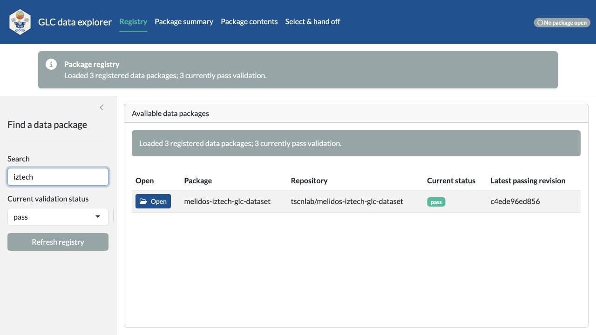
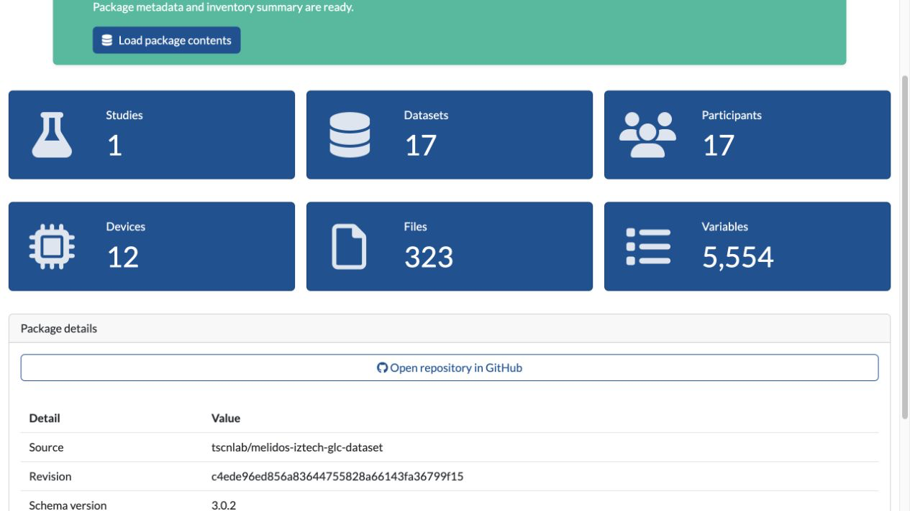
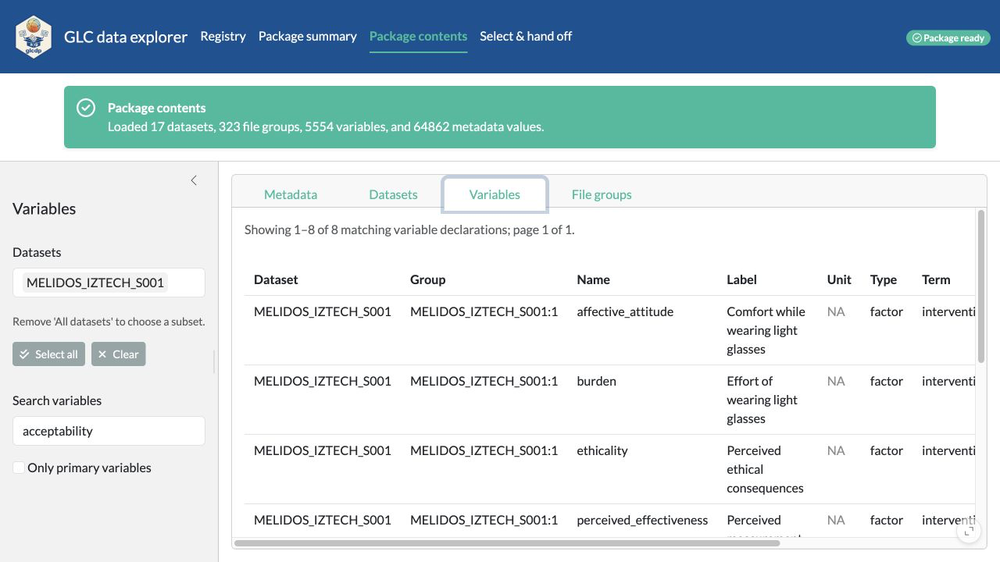
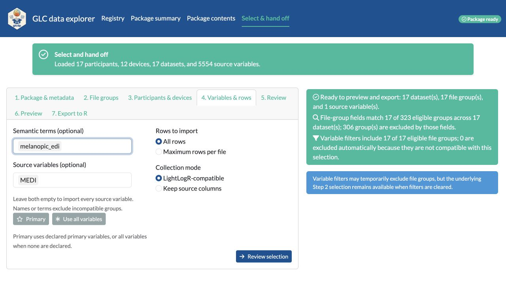
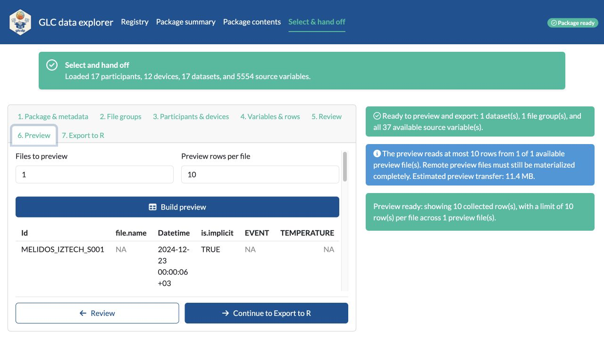
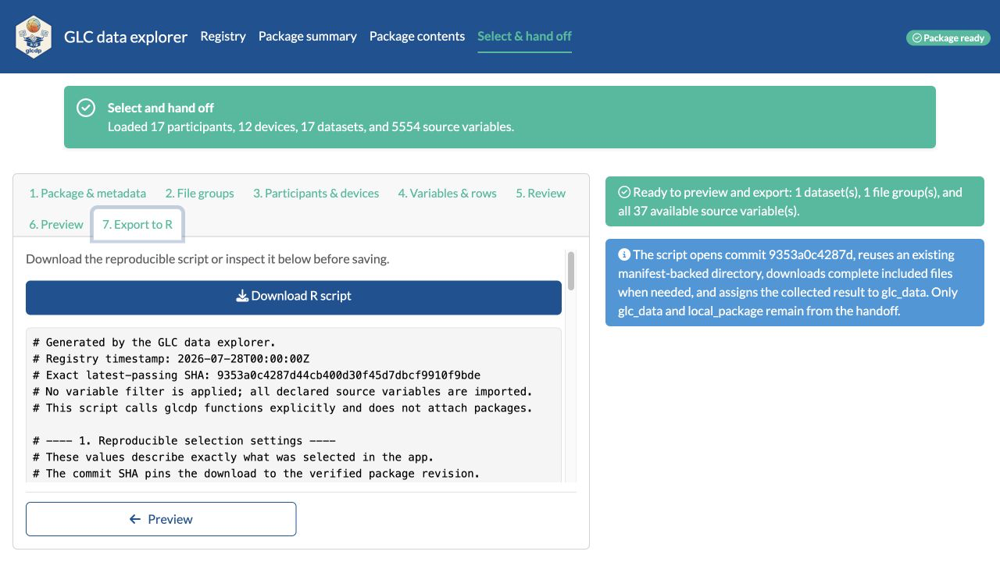
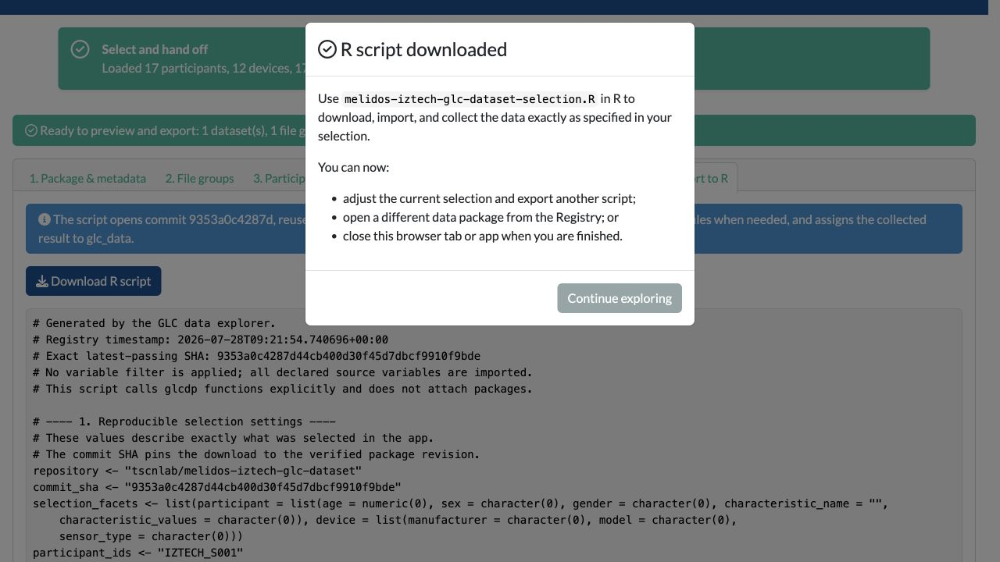

Explore and hand off data with the Shiny app
Source:vignettes/glc-data-explorer.Rmd
glc-data-explorer.RmdThe GLC data explorer provides a guided path from a registered data
package to an annotated R import script. It is useful when you want to
inspect a package and define a reproducible selection without first
learning every glcdp function.
Install the optional application dependencies once, then start the app:
install.packages(c("shiny", "bslib"))
glcdp::glc_explore()The app opens in a browser. It runs in the current R session, and package data are not uploaded to another service.
1. Open a passing package revision
The Registry starts with packages whose current
validation status is pass. Search by package or repository,
or change the status filter to inspect other registry entries. The
status message reports both the number of registered packages and how
many currently pass validation.
Only rows with a latest passing revision have an Open button. Opening a row uses its exact passing commit rather than a moving branch.

2. Understand the package at a glance
After the package opens, the app moves directly to Package summary. The value boxes report the number of studies, datasets, participants, devices, files, and variables. Each box is a shortcut to the corresponding inventory or metadata view. The package details also pin the source repository and complete revision SHA.

3. Inspect package contents
Use Package contents to examine four complementary views:
- Datasets connects studies, participants, devices, modalities, file groups, files, variables, and time zones.
- File groups shows which source files belong together.
- Variables shows declared source columns by one or more datasets.
- Metadata provides both a hierarchical view and a comparison table.
The sidebar changes with the active view, so only relevant filters are shown. For nested metadata, find a field in Hierarchy, search for its field name, and switch to Table to compare that field across records.

4. Build a compatible selection
Open Select & hand off and work from the sidebar:
- Optionally restrict participants by age range, sex, gender, characteristics, or participant id.
- Optionally restrict devices by manufacturer, model, sensor type, or device id.
- Select at least one dataset.
- Optionally select file groups and source variables.
Leaving File groups empty includes every group in the selected datasets. Leaving Source variables empty imports every variable from the included groups. The buttons select recommended or explicit values when a narrower choice is useful.
The summary reports the effective participants, devices, datasets, file groups, variables, files, and estimated transfer. If groups cannot be collected together, the app explains the incompatibility and asks you to select a compatible file-group or dataset subset.

5. Preview a small sample
Continue to step 2 to inspect data before exporting. The default reads at most 10 rows from the first declared file in each included file group. Enter another row limit, from 1 to 1000, when a larger or smaller sample is more useful.
The preview limits rows parsed from each file, but a remote file may still need to be transferred completely. The app therefore shows the estimated whole-file transfer before you build the preview.

6. Export the reproducible R workflow
Continue to step 3 and download the generated R script. Broad annotations explain each operation. The script:
- records the registry timestamp, exact passing SHA, and selected ids;
- reuses a matching local download or downloads the selected files;
- opens that local package;
- defines the requested
glc_read()operation; and - collects the result into
glc_datawith the chosen column mode.

After the download completes, the app confirms that the script can now be run in R. Continue exploring to adjust the selection, return to the Registry for a different package, or close the browser tab or app.

The downloaded script is the durable handoff: save it with the analysis so the selected package commit, files, variables, and collection behavior remain reviewable and repeatable.